How to make any plot in ggplot2?
ggplot2 is the most elegant and aesthetically pleasing graphics framework available in R. It has a nicely planned structure to it. This tutorial focusses on exposing this underlying structure you can use to make any ggplot. But, the way you make plots in ggplot2 is very different from base graphics making the learning curve steep. So leave what you know about base graphics behind and follow along. You are just 5 steps away from cracking the ggplot puzzle.
Topics
Quick Ref
- Make a time series plot (using ggfortify)
- Plot multiple timeseries
- Make bar charts
- Custom layout
- Flipping coordinates
- Adjust X and Y axis limits
- Equal coordinates
- Change themes
- Legend
- Grid lines and panel background
- Plot margin and background
- Annotation
- Saving ggplot
Cheatsheets: Lookup code to accomplish common tasks from this ggplot2 quickref and this cheatsheet
The distinctive feature of the ggplot2 framework is the way you make plots through adding ‘layers’. The process of making any ggplot is as follows.
1. The Setup
First, you need to tell ggplot what dataset to use. This is done using the ggplot(df) function, where df is a dataframe that contains all features needed to make the plot. This is the most basic step. Unlike base graphics, ggplot doesn’t take vectors as arguments.
Optionally you can add whatever aesthetics you want to apply to your ggplot (inside aes() argument) - such as X and Y axis by specifying the respective variables from the dataset. The variable based on which the color, size, shape and stroke should change can also be specified here itself. The aesthetics specified here will be inherited by all the geom layers you will add subsequently.
If you intend to add more layers later on, may be a bar chart on top of a line graph, you can specify the respective aesthetics when you add those layers.
Below, I show few examples of how to setup ggplot using in the diamonds dataset that comes with ggplot2 itself. However, no plot will be printed until you add the geom layers.
Examples:
library(ggplot2)
ggplot(diamonds) # if only the dataset is known.
ggplot(diamonds, aes(x=carat)) # if only X-axis is known. The Y-axis can be specified in respective geoms.
ggplot(diamonds, aes(x=carat, y=price)) # if both X and Y axes are fixed for all layers.
ggplot(diamonds, aes(x=carat, color=cut)) # Each category of the 'cut' variable will now have a distinct color, once a geom is added.The aes argument stands for aesthetics. ggplot2 considers the X and Y axis of the plot to be aesthetics as well, along with color, size, shape, fill etc. If you want to have the color, size etc fixed (i.e. not vary based on a variable from the dataframe), you need to specify it outside the aes(), like this.
ggplot(diamonds, aes(x=carat), color="steelblue")See this color palette for more colors.
2. The Layers
The layers in ggplot2 are also called ‘geoms’. Once the base setup is done, you can append the geoms one on top of the other. The documentation provides a compehensive list of all available geoms.
ggplot(diamonds, aes(x=carat, y=price, color=cut)) + geom_point() + geom_smooth() # Adding scatterplot geom (layer1) and smoothing geom (layer2).We have added two layers (geoms) to this plot - the geom_point() and geom_smooth(). Since the X axis Y axis and the color were defined in ggplot() setup itself, these two layers inherited those aesthetics. Alternatively, you can specify those aesthetics inside the geom layer also as shown below.
ggplot(diamonds) + geom_point(aes(x=carat, y=price, color=cut)) + geom_smooth(aes(x=carat, y=price, color=cut)) # Same as above but specifying the aesthetics inside the geoms.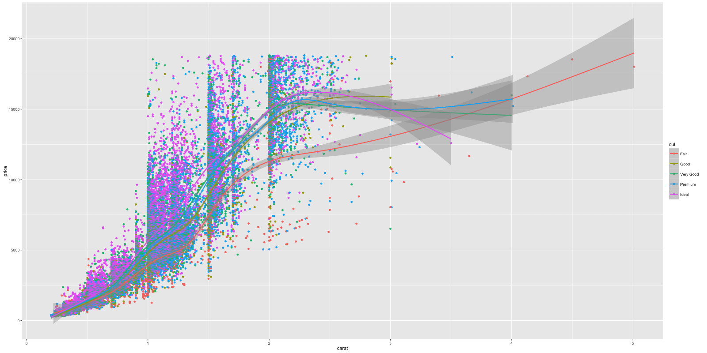
Notice the X and Y axis and how the color of the points vary based on the value of cut variable. The legend was automatically added. I would like to propose a change though. Instead of having multiple smoothing lines for each level of cut, I want to integrate them all under one line. How to do that? Removing the color aesthetic from geom_smooth() layer would accomplish that.
library(ggplot2)
ggplot(diamonds) + geom_point(aes(x=carat, y=price, color=cut)) + geom_smooth(aes(x=carat, y=price)) # Remove color from geom_smooth
ggplot(diamonds, aes(x=carat, y=price)) + geom_point(aes(color=cut)) + geom_smooth() # same but simpler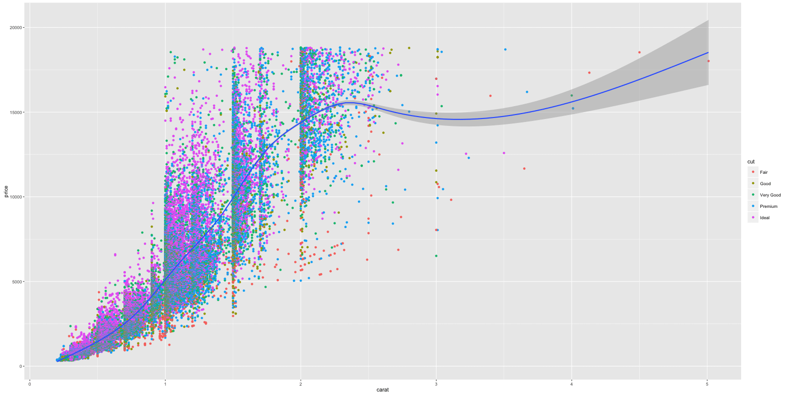
Here is a quick challenge for you. Can you make the shape of the points vary with color feature?
Though setting up took us quite a bit of code, adding further complexity such as the layers, distinct color for each cut etc was easy. Imagine how much code you would have had to write if you were to make this in base graphics? Thanks to ggplot2!
# Answer to the challenge.
ggplot(diamonds, aes(x=carat, y=price, color=cut, shape=color)) + geom_point()3. The Labels
Now that you have drawn the main parts of the graph. You might want to add the plot’s main title and perhaps change the X and Y axis titles. This can be accomplished using the labs layer, meant for specifying the labels. However, manipulating the size, color of the labels is the job of the ‘Theme’.
library(ggplot2)
gg <- ggplot(diamonds, aes(x=carat, y=price, color=cut)) + geom_point() + labs(title="Scatterplot", x="Carat", y="Price") # add axis lables and plot title.
print(gg)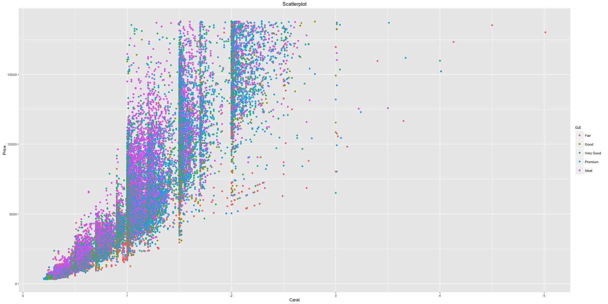
The plot’s main title is added and the X and Y axis labels capitalized.
Note: If you are showing a ggplot inside a function, you need to explicitly save it and then print using the print(gg), like we just did above.
4. The Theme
Almost everything is set, except that we want to increase the size of the labels and change the legend title. Adjusting the size of labels can be done using the theme() function by setting the plot.title, axis.text.x and axis.text.y. They need to be specified inside the element_text(). If you want to remove any of them, set it to element_blank() and it will vanish entirely.
Adjusting the legend title is a bit tricky. If your legend is that of a color attribute and it varies based in a factor, you need to set the name using scale_color_discrete(), where the color part belongs to the color attribute and the discrete because the legend is based on a factor variable.
gg1 <- gg + theme(plot.title=element_text(size=30, face="bold"),
axis.text.x=element_text(size=15),
axis.text.y=element_text(size=15),
axis.title.x=element_text(size=25),
axis.title.y=element_text(size=25)) +
scale_color_discrete(name="Cut of diamonds") # add title and axis text, change legend title.
print(gg1) # print the plot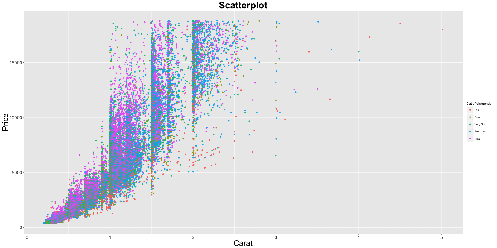
If the legend shows a shape attribute based on a factor variable, you need to change it using scale_shape_discrete(name="legend title"). Had it been a continuous variable, use scale_shape_continuous(name="legend title") instead.
So now, Can you guess the function to use if your legend is based on a fill attribute on a continuous variable?
The answer is scale_fill_continuous(name="legend title").
5. The Facets
In the previous chart, you had the scatterplot for all different values of cut plotted in the same chart. What if you want one chart for one cut?
gg1 + facet_wrap( ~ cut, ncol=3) # columns defined by 'cut'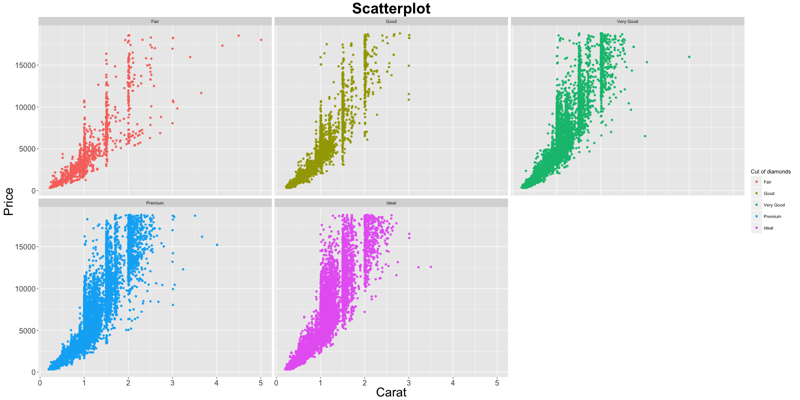
facet_wrap(formula) takes in a formula as the argument. The item on the RHS corresponds to the column. The item on the LHS defines the rows.
gg1 + facet_wrap(color ~ cut) # row: color, column: cut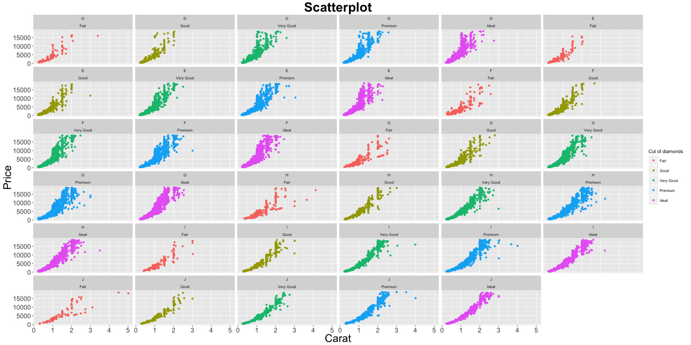
In facet_wrap, the scales of the X and Y axis are fixed to accomodate all points by default. This would make comparison of attributes meaningful because they would be in the same scale. However, it is possible to make the scales roam free making the charts look more evenly distributed by setting the argument scales=free.
gg1 + facet_wrap(color ~ cut, scales="free") # row: color, column: cutFor comparison purposes, you can put all the plots in a grid as well using facet_grid(formula).
gg1 + facet_grid(color ~ cut) # In a grid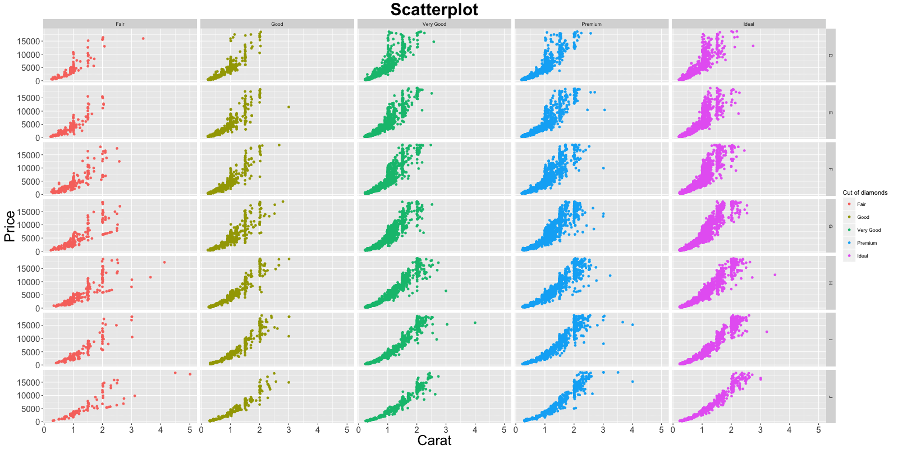
Note, the headers for individual plots are gone leaving more space for plotting area..
6. Commonly Used Features
6.1 Make a time series plot (using ggfortify)
The ggfortify package makes it very easy to plot time series directly from a time series object, without having to convert it to a dataframe. The example below plots the AirPassengers timeseries in one step. Cool!. See more ggfortify’s autoplot options to plot time series here.
library(ggfortify)
autoplot(AirPassengers) + labs(title="AirPassengers") # where AirPassengers is a 'ts' object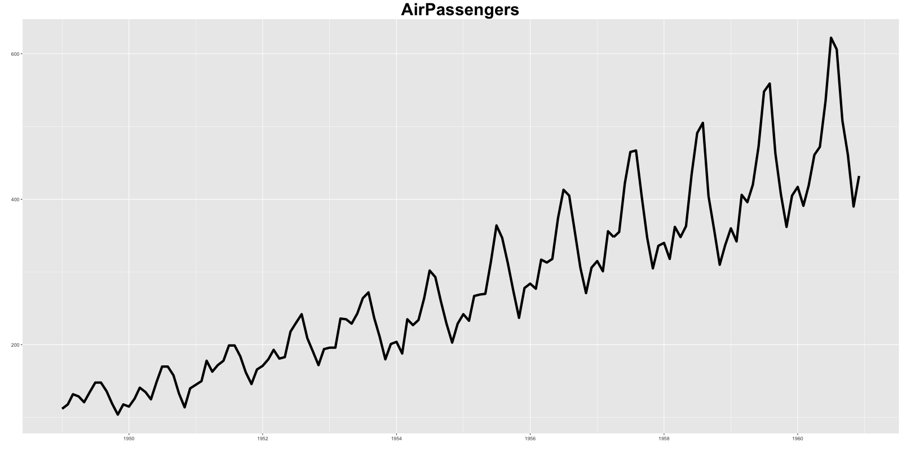
6.2 Plot multiple timeseries on same ggplot
Plotting multiple timeseries requires that you have your data in dataframe format, in which one of the columns is the dates that will be used for X-axis.
Approach 1: After converting, you just need to keep adding multiple layers of time series one on top of the other.
Approach 2: Melt the dataframe using reshape2::melt by setting the id to the date field. Then just add one geom_line and set the color aesthetic to variable (which was created during the melt).
# Approach 1:
data(economics, package="ggplot2") # init data
economics <- data.frame(economics) # convert to dataframe
ggplot(economics) + geom_line(aes(x=date, y=pce, color="pcs")) + geom_line(aes(x=date, y=unemploy, col="unemploy")) + scale_color_discrete(name="Legend") + labs(title="Economics") # plot multiple time series using 'geom_line's# Approach 2:
library(reshape2)
df <- melt(economics[, c("date", "pce", "unemploy")], id="date")
ggplot(df) + geom_line(aes(x=date, y=value, color=variable)) + labs(title="Economics")# plot multiple time series by melting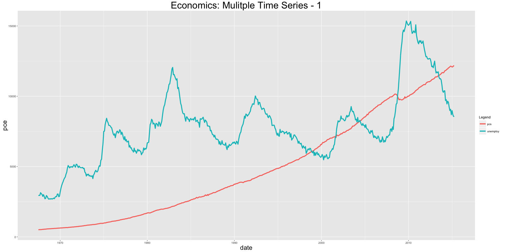
The disadvantage with ggplot2 is that it is not possible to get multiple Y-axis on the same plot. To plot multiple time series on the same scale can make few of the series appear small. An alternative would be to facet_wrap it and set the scales='free'.
df <- melt(economics[, c("date", "pce", "unemploy", "psavert")], id="date")
ggplot(df) + geom_line(aes(x=date, y=value, color=variable)) + facet_wrap( ~ variable, scales="free")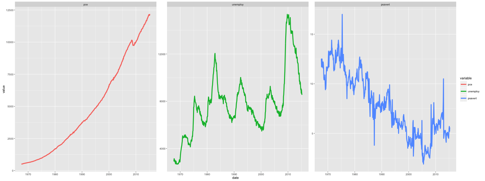
6.3 Bar charts
By default, ggplot makes a ‘counts’ barchart, meaning, it counts the frequency of items specified by the x aesthetic and plots it. In this format, you don’t need to specify the Y aesthetic. However, if you would like the make a bar chart of the absolute number, given by Y aesthetic, you need to set stat="identity" inside the geom_bar.
plot1 <- ggplot(mtcars, aes(x=cyl)) + geom_bar() + labs(title="Frequency bar chart") # Y axis derived from counts of X item
print(plot1)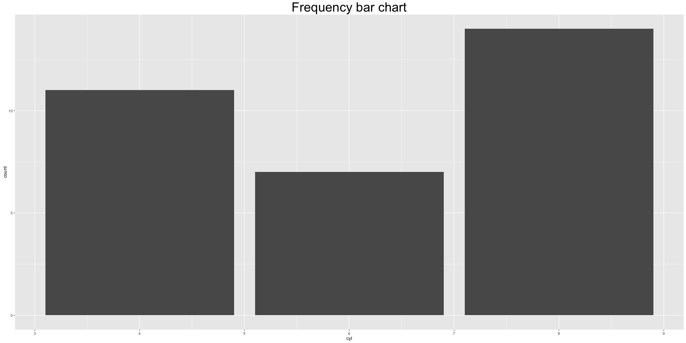
df <- data.frame(var=c("a", "b", "c"), nums=c(1:3))
plot2 <- ggplot(df, aes(x=var, y=nums)) + geom_bar(stat = "identity") # Y axis is explicit. 'stat=identity'
print(plot2)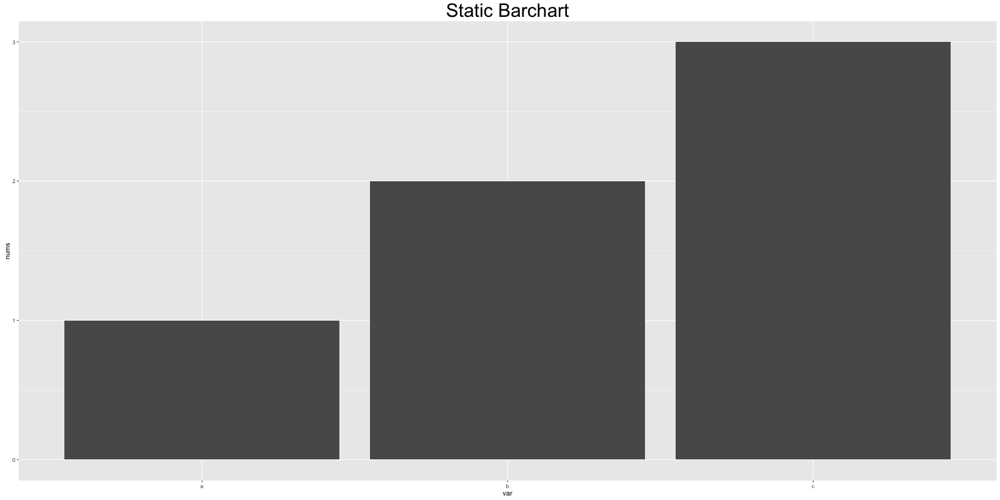
6.4 Custom layout
The gridExtra package provides the facility to arrage multiple ggplots in a single grid.
library(gridExtra)
grid.arrange(plot1, plot2, ncol=2)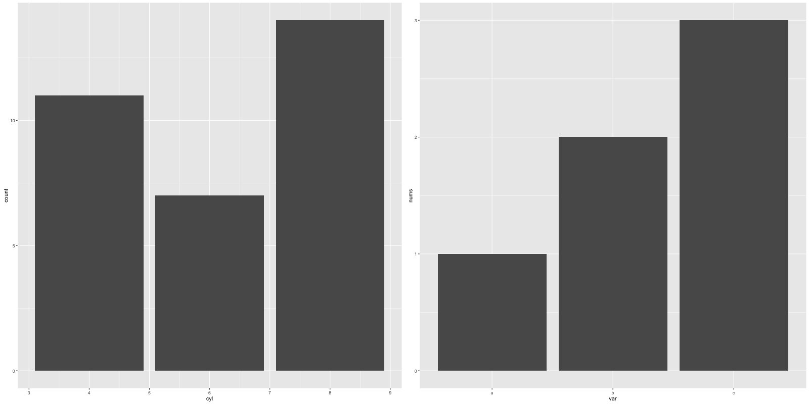
6.5 Flipping coordinates
df <- data.frame(var=c("a", "b", "c"), nums=c(1:3))
ggplot(df, aes(x=var, y=nums)) + geom_bar(stat = "identity") + coord_flip() + labs(title="Coordinates are flipped")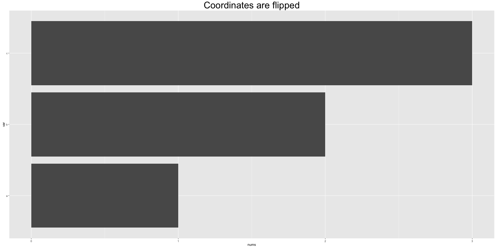
6.6 Adjust X and Y axis limits
There are 3 ways to change the X and Y axis limits.
- Using coord_cartesian(xlim=c(x1,x2))
- Using xlim(c(x1,x2))
- Using scale_x_continuous(limits=c(x1,x2))
Warning: Items 2 and 3 will delete the datapoints that lie outisde the limit from the data itself. So, if you add any smoothing line line and such, the outcome will be distorted. Item 1 (coord_cartesian) does not delete any datapoint, but instead zooms in to a specific region of the chart.
ggplot(diamonds, aes(x=carat, y=price, color=cut)) + geom_point() + geom_smooth() + coord_cartesian(ylim=c(0, 10000)) + labs(title="Coord_cartesian zoomed in!")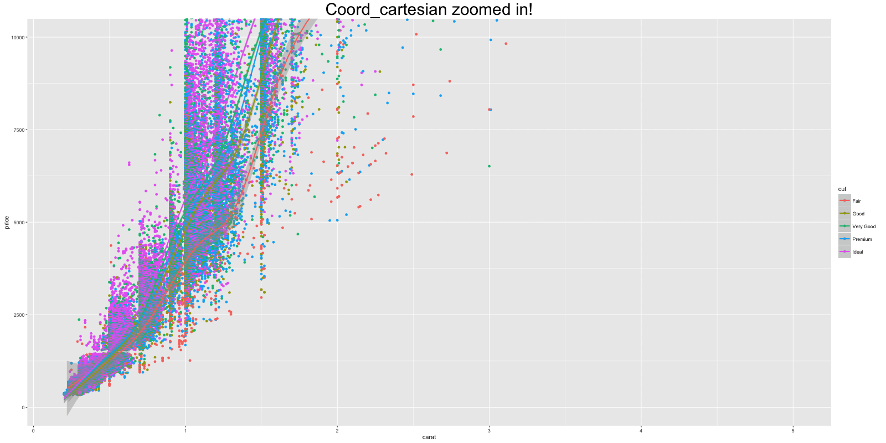
ggplot(diamonds, aes(x=carat, y=price, color=cut)) + geom_point() + geom_smooth() + ylim(c(0, 10000)) + labs(title="Datapoints deleted: Note the change in smoothing lines!")
#> Warning messages:
#> 1: Removed 5222 rows containing non-finite values
#> (stat_smooth).
#> 2: Removed 5222 rows containing missing values
#> (geom_point).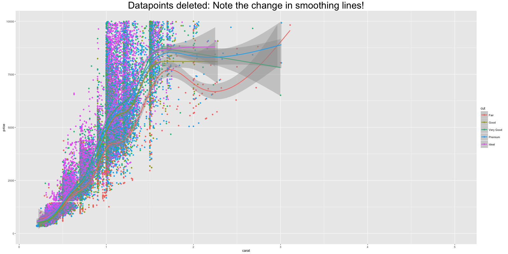
6.7 Equal coordinates
Adding coord_equal() to ggplot sets the limits of X and Y axis to be equal. Below is a meaningless example. So to save face for not giving a good example, I am not showing you the output.
ggplot(diamonds, aes(x=price, y=price+runif(nrow(diamonds), 100, 10000), color=cut)) + geom_point() + geom_smooth() + coord_equal()6.8 Change themes
Apart from the basic ggplot2 theme, you can change the look and feel of your plots using one of these builtin themes.
- theme_gray()
- theme_bw()
- theme_linedraw()
- theme_light()
- theme_minimal()
- theme_classic()
- theme_void()
The ggthemes package provides additional ggplot themes that imitates famous magazines and softwares. Here is an example of how to change the theme.
ggplot(diamonds, aes(x=carat, y=price, color=cut)) + geom_point() + geom_smooth() +theme_bw() + labs(title="bw Theme")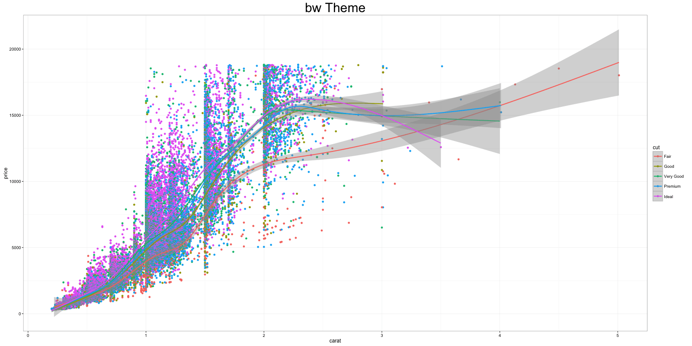
6.9 Legend - Deleting and Changing Position
By setting theme(legend.position="none"), you can remove the legend. By setting it to ‘top’, i.e. theme(legend.position="top"), you can move the legend around the plot. By setting legend.postion to a co-ordinate inside the plot you can place the legend inside the plot itself. The legend.justification denotes the anchor point of the legend, i.e. the point that will be placed on the co-ordinates given by legend.position.
p1 <- ggplot(diamonds, aes(x=carat, y=price, color=cut)) + geom_point() + geom_smooth() + theme(legend.position="none") + labs(title="legend.position='none'") # remove legend
p2 <- ggplot(diamonds, aes(x=carat, y=price, color=cut)) + geom_point() + geom_smooth() + theme(legend.position="top") + labs(title="legend.position='top'") # legend at top
p3 <- ggplot(diamonds, aes(x=carat, y=price, color=cut)) + geom_point() + geom_smooth() + labs(title="legend.position='coords inside plot'") + theme(legend.justification=c(1,0), legend.position=c(1,0)) # legend inside the plot.
grid.arrange(p1, p2, p3, ncol=3) # arrange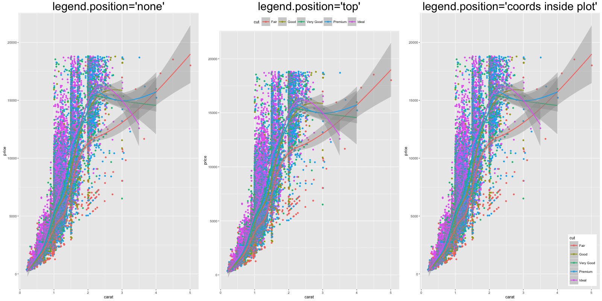
6.10 Grid lines
ggplot(mtcars, aes(x=cyl)) + geom_bar(fill='darkgoldenrod2') +
theme(panel.background = element_rect(fill = 'steelblue'),
panel.grid.major = element_line(colour = "firebrick", size=3),
panel.grid.minor = element_line(colour = "blue", size=1))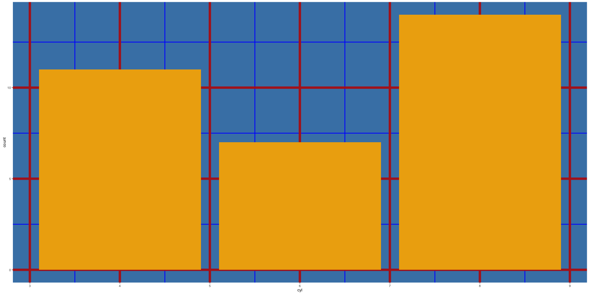
6.11 Plot margin and background
ggplot(mtcars, aes(x=cyl)) + geom_bar(fill="firebrick") + theme(plot.background=element_rect(fill="steelblue"), plot.margin = unit(c(2, 4, 1, 3), "cm")) # top, right, bottom, left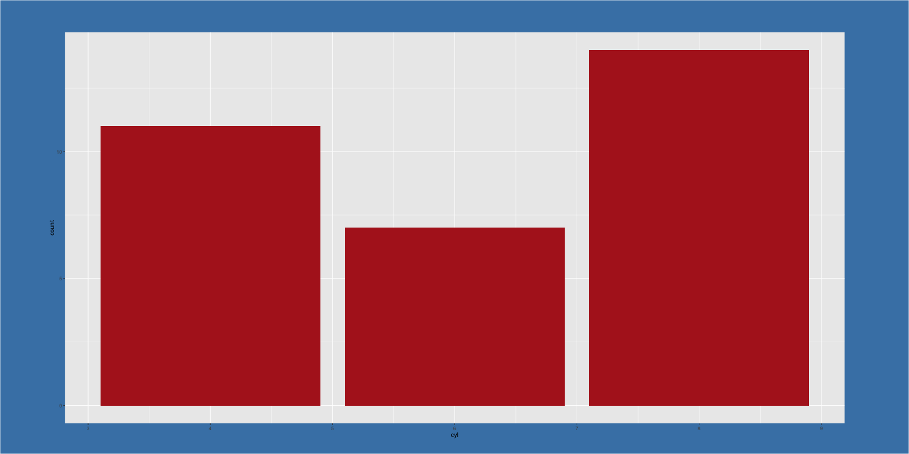
6.12 Annotation
library(grid)
my_grob = grobTree(textGrob("This text is at x=0.1 and y=0.9, relative!\n Anchor point is at 0,0", x=0.1, y=0.9, hjust=0,
gp=gpar(col="firebrick", fontsize=25, fontface="bold")))
ggplot(mtcars, aes(x=cyl)) + geom_bar() + annotation_custom(my_grob) + labs(title="Annotation Example")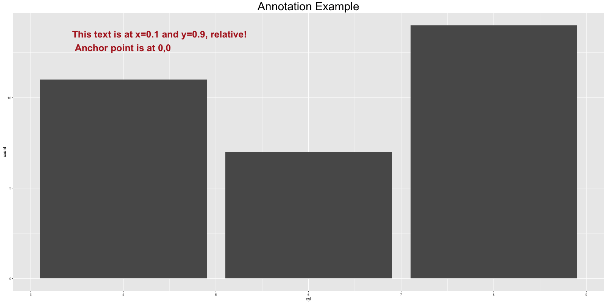
6.13 Saving ggplot
plot1 <- ggplot(mtcars, aes(x=cyl)) + geom_bar()
ggsave("myggplot.png") # saves the last plot.
ggsave("myggplot.png", plot=plot1) # save a stored ggplotFor a more comprehensive list, the top 50 Ggplot2 visualizations provides some advanced Ggplot2 charts and helps to choose the right type for your specific objectives.
For a quicker reference, refer to this ggplot2 cheatsheet.
Have a suggestion or found a bug? Notify here.
Further Reading
Pick a chart type, scale, or theme tweak. Every recipe has runnable code, common variations, and the pitfall to avoid.
Add a single text label, segment, rectangle, or arrow to a plot without binding the layer to a column in your data frame.
geom_area() geom_area() in R: Area ChartsDraw filled area charts in R.
geom_bar() geom_bar() vs geom_col() in R: Bar Charts Made EasyUse ggplot2 geom_bar() and geom_col() to build bar charts in R.
geom_bin2d() geom_bin2d() in R: 2D Rectangular Density BinsPlot 2D density with rectangular bins for dense scatter data in R.
geom_boxplot() geom_boxplot() in R: Box PlotsCompare distributions across groups in R.
geom_col() geom_col() in R: Bar Charts From Pre-Computed HeightsBuild bar charts where bar height is pre-computed in R.
geom_contour() geom_contour() in R: Draw Contour LinesDraw contour lines for 2D density or surfaces in R.
geom_curve() geom_curve() in R: Draw Curved ConnectionsDraw curved arcs between two points in R.
geom_density() geom_density() in R: Density PlotsDraw smooth distribution curves in R.
geom_density2d() geom_density2d() in R: 2D Density Contour LinesDraw 2D density contour lines on a scatter plot in R.
geom_errorbar() geom_errorbar() in R: Add Error Bars to PlotsAdd vertical error bars to bar or point plots in R.
geom_hex() geom_hex() in R: 2D Hexagonal Density BinsPlot 2D density with hexagonal bins for dense scatter data in R.
geom_histogram() geom_histogram() in R: HistogramsBuild histograms in R.
geom_jitter() geom_jitter() in R: Scatter With Random JitterAdd random noise to scatter points and avoid overplotting in R.
geom_label() geom_label() in R: Boxed Text LabelsAdd boxed text labels in R.
geom_line() geom_line() in R: Line ChartsBuild line charts in R for time series and trends.
geom_path() geom_path() in R: Connect Points in Data OrderConnect points in data row order in R.
geom_point() geom_point() in R: Scatter PlotsBuild scatter plots in R.
geom_pointrange() geom_pointrange() in R: Point With Range BarDraw a central point with a vertical range bar in R.
geom_polygon() geom_polygon() in R: Filled Closed ShapesDraw filled closed shapes from x/y coordinates in R.
geom_raster() geom_raster() in R: Fast Heatmap From Regular GridDraw a heatmap from a regular grid in R, faster than geom_tile.
geom_rect() geom_rect() in R: Draw RectanglesDraw rectangles from xmin/xmax/ymin/ymax in R.
geom_ribbon() geom_ribbon() in R: Filled Area Between Two LinesDraw a filled area between two y values for confidence bands or ranges in R.
geom_segment() geom_segment() in R: Draw Line SegmentsDraw line segments between explicit (x, y) and (xend, yend) coordinates in R.
geom_smooth() geom_smooth() in R: Trend LinesAdd trend lines to plots in R.
geom_step() geom_step() in R: Step Function LinesDraw step-function lines in R, useful for cumulative or piecewise data.
geom_text() geom_text() in R: Add Text Labels to a PlotAdd text labels at coordinates in R.
geom_tile() geom_tile() in R: HeatmapsBuild heatmaps in R.
geom_violin() geom_violin() in R: Violin PlotsShow distribution shape across groups in R.
coord_cartesian() coord_cartesian() in R: Zoom Without Dropping DataZoom a plot to a chosen x or y window without removing data outside the limits, so stats and smoothers stay intact.
coord_fixed() coord_fixed() in R: Lock Plot Aspect RatioLock the aspect ratio so equal data units take equal screen space.
coord_flip() coord_flip() in R: Horizontal Bar and Box PlotsSwap the x and y axes and turn vertical bar, box, and lollipop charts into clean horizontal versions with readable labels.
coord_polar() coord_polar() in R: Build Polar Coordinate ChartsConvert cartesian plots into polar coordinates.
facet_grid() facet_grid() in R: Grid Layouts With Free ScalesSplit a plot into a matrix of panels by row and column variables.
facet_wrap() facet_wrap() in R: Multi-Panel PlotsSplit one plot into a grid of small-multiple panels.
stat_ecdf() stat_ecdf() in R: Plot Empirical CDFsPlot empirical CDFs in R.
stat_smooth() stat_smooth() in R: Stat-Side Trend SmoothingFit trend lines in R with examples: stat vs geom duality, the geom argument, computed variables, and geom_smooth comparison.
stat_summary() stat_summary() in R: Plot Means and Error BarsPlot means, medians, errorbars, and bootstrap CIs by group.
position_dodge() position_dodge() in R: Side-by-Side Bars and PointsPlace overlapping bars, points, and error bars side-by-side.
position_jitter() position_jitter() in R: Reduce Point OverplottingAdd controlled random noise to any geom in R.
position_stack() position_stack() in R: Stacked Bars and AreasStack bars, areas, and labels on top of each other in R.
scale_color_brewer() scale_color_brewer() in R: ColorBrewer PalettesApply named ColorBrewer palettes to discrete groups in R.
scale_color_manual() scale_color_manual() in R: Custom Colors for GroupsAssign custom colors to discrete groups in R.
scale_color_viridis() scale_color_viridis() in R: Perceptually Uniform ColorsUse ggplot2 scale_color_viridis_c() and scale_color_viridis_d() for perceptually uniform colors in R.
scale_fill_gradient() scale_fill_gradient() in R: Custom Color GradientsTwo-color fill gradients on heatmaps and bars.
scale_linetype() scale_linetype() in R: Map Factor to Line PatternsMap a factor to dashed, dotted, and solid line patterns.
scale_shape() scale_shape() in R: Map a Variable to Point ShapesMap a factor to point shapes.
scale_size() scale_size() in R: Control Point and Bubble SizeControl point and bubble plot sizes.
scale_x_continuous() scale_x_continuous() in R: Customize the X AxisCustomize the x-axis breaks, labels, limits, and transformations in R.
scale_x_date() scale_x_date() in R: Format Date AxisFormat a Date x axis with custom breaks and date labels in R.
scale_x_datetime() scale_x_datetime() in R: Format POSIXct AxisFormat a POSIXct datetime x axis with custom breaks and labels in R.
scale_x_discrete() scale_x_discrete() in R: Customize Discrete X AxisCustomize the x-axis when x is a factor or character in R.
scale_x_log10() scale_x_log10() in R: Log-Transform the X AxisLog10-transform the x axis for skewed data in R.
scale_y_continuous() scale_y_continuous() in R: Customize the Y AxisCustomize the y-axis breaks, labels, limits, and transformations in R.
scale_y_log10() scale_y_log10() in R: Log-Transform the Y AxisLog10-transform the y axis for skewed data in R.
element_line() element_line() in R: Style Lines and GridlinesStyle axis lines, gridlines, and tick marks.
element_rect() element_rect() in R: Style Backgrounds and BordersStyle backgrounds, legend boxes, strip headers, and panel borders with ggplot2 element_rect() in R.
element_text() element_text() in R: Style Every Text ElementStyle titles, axis labels, legends, and facet strips.
guides() guides() in R: Customize Legend and Axis GuidesHide legends, change titles, reorder items, and switch between guide_legend, guide_colorbar, and guide_axis with examples.
theme() theme() in R: Customize Every Plot ElementCustomize fonts, axes, legends, gridlines, and backgrounds.
theme_bw() theme_bw() in R: White Theme With Panel BorderPublication plots with a white background, light grey gridlines, and a full panel border.
theme_classic() theme_classic() in R: L-Shape Axis Theme for PapersRender plots with a white background, no gridlines, and L-shape axes.
theme_minimal() theme_minimal() in R: Clean White-Background ThemeClean white-background plots with light gridlines.
ggtitle() ggtitle() in R: Add Titles and SubtitlesAdd a title and subtitle to a plot.
labs() labs() in R: Title, Subtitle, Caption and AxesMaster ggplot2 labs() in R to set title, subtitle, caption, axis labels, tag, and legend titles in one call.
xlab() xlab() in R: Set the X Axis LabelSet, change, or remove the x axis label.
ylab() ylab() in R: Set the Y Axis LabelSet, change, or remove the y axis label.
ggsave() ggsave() in R: Save Plots to PNG, PDF, and SVGExport plots to PNG, PDF, SVG, or JPEG in R.